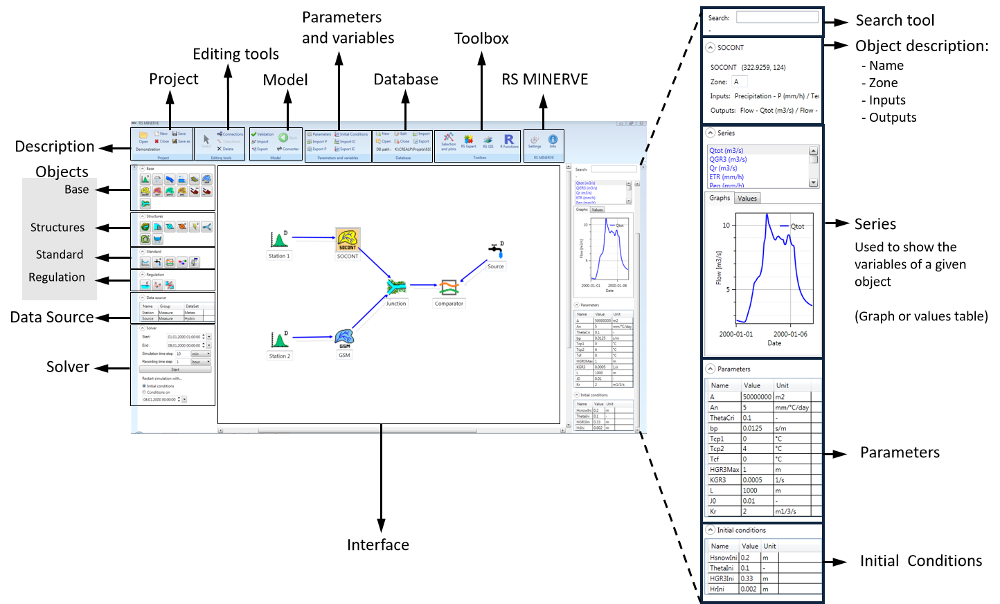
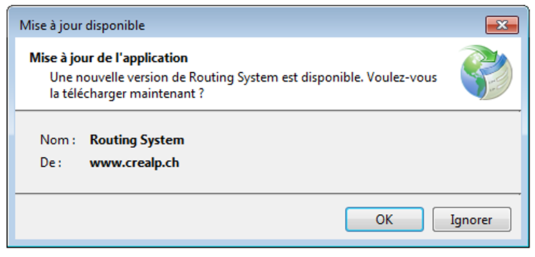
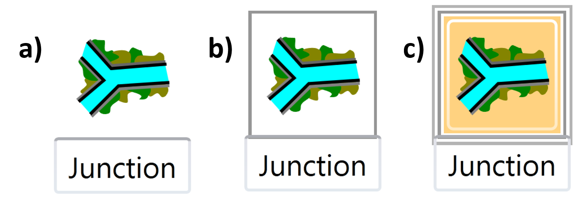
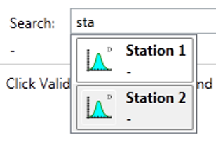
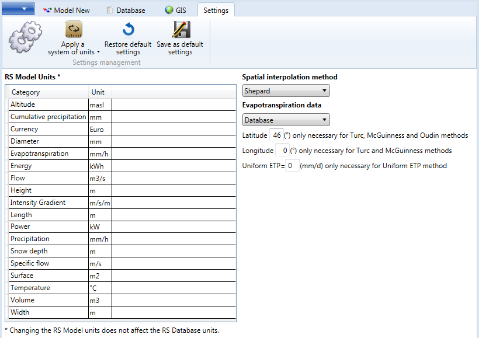

This chapter contains the User Manual of the RS MINERVE software.
Document structure
The manual is composed of 7 main chapters:
In the different chapters, actions to be done by the user are presented in blue.
In addition to this User’s manual, the reader can also find all model equations and file descriptions in the technical manual (García Hernández et al. 2020).
Installation procedure
Proceed as follows to install RS MINERVE on your computer (requires Windows 7 or later versions of Windows):
Visit the CREALP website: https://crealp.ch/rs-minerve/
Select the version within the “Téléchargement et support” section
Save the file, double-click on RSMinerve-install.exe (in the Internet browser Downloads frame) and follow the installation procedure.

Updates
When RS MINERVE is opened and if an Internet connection is available, RS MINERVE connects to the server to check if a new version is available. If this is the case, the user is invited to install the new version by accepting the update.

Uninstallation procedure
To uninstall RS MINERVE, use the conventional uninstallation procedure in Windows.
The Model interface
The structure of the RS MINERVE main window and the different frames composing it are presented in Figure 1.
The Interface frame (Figure 1) in the middle of the RS MINERVE interface allows the visualization of the model network.
Interaction within the Interface is possible with the mouse.
Use the scroll wheel to zoom in / zoom out
Press the scroll wheel and move the mouse to move the interface window
Left click on an object (Figure 3 (b)) \(\rightarrow\) Select the object and move it in the interface
Double-click on an object (the object is highlighted, Figure 3 (c)) \(\rightarrow\) Display the Object description, Series and other corresponding frames (in the right part).

The Search tool
To facilitate navigation in the main window, the Search tool (right-frame) allows the user to enter the name of an object. All corresponding names are listed and a click on the correct one opens the parent model and highlights the corresponding object.

Settings
The user can access the settings in the RS MINERVE frame (Figure 5) and can change the following values:
The units of inputs, parameters and state variables of RS MINERVE (Precipitation, Temperature, Length, Height,…)
The interpolation method for meteorological values:
Thiessen polygons: for using the nearest meteorological station
Shepard method: for values depending on inverse distance weighting
The Potential Evapotranspiration (\(ETP\)) method used in the hydrological model. The \(ETP\) can be directly taken from Database, or computed with one of the following methods:
Turc
McGuinness
Oudin
Uniform ETP
Any change is directly applied to the current model. In addition, the user can also save the current settings as default settings for new models.

List of keyboard shortcuts and mouse actions
The user can use a list of keyboard shortcuts (Table 1) as well as a list of mouse actions over the graphics (Table 2).
| Ctrl + N | New Project |
| Ctrl + O | Open Project |
| Ctrl + S | Save Project |
| Ctrl + Shift + S | Save as Project |
| Ctrl + W | Close Project |
| F5 | Start Simulation |
| Shift + F5 | Stop Simulation |
| Esc | Back (go to hierarchical higher level), Cancel object selection (when object type selected in Objects frame) |
| Space | Switch between Select and Connections |
| Ctrl + Space | Switch between Select and Transitions (in a Regulation object only) |
| Ctrl | To select more than one object or series |
| OVER THE AXES | |
| Left click | - |
| Right click and move the mouse | Displace the current view |
| Move the scroll wheel | Zoom in / zoom out |
| Click on scroll wheel and movethe mouse | Select the zoom zone |
| Double click on scroll wheel | Back to default zoom |
| OVER THE TIME SERIES PLOT | |
| Left click | Date and value of the nearest series point |
| Right click and move the mouse | Displace the current view |
| Move the scroll wheel | Zoom in / zoom out |
| Click on scroll wheel and move the mouse | Select the zoom zone |
| Double click on scroll wheel | Back to default zoom |